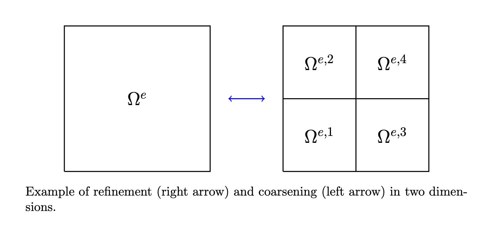

Solution Transfer
Introduction
When a single block is refined, \(2^d\) child blocks are created and it is necessary to prolong solution information from the cells in the original block to the cells in the newly created finer blocks. Conversely, when \(2^d\) blocks that share a single parent are coarsened, it is necessary to restrict the solution from the cells in the original blocks to the remaining coarse block. The figure below illustrates the concept of a sinlge cell being split into \(n_s = 2^d\) child cells, denoted by \(\Omega^{e,s}\).
Prolongation
To prolong the solution state from a coarse cell \(\Omega^e\) to a fine cell \(\Omega^{e,s}\), we perform an \(L^2\) projection of the original solution \(\boldsymbol{U}^e\) onto the modal basis on the finer cell, so that
In the first equality, the original solution \(u^e\) is evaluated at shifted reference points \(\hat{\boldsymbol{\xi}}^s\) so that the solution \(u^e(\hat{\boldsymbol{\xi}}, t)\) in the original cell is evaluated at the same reference locations as the prolonged solution \(u^{e,s}(\boldsymbol{\xi}, t)\) in the current subcell. In the second equality, the Jacobian determinants have cancelled as they are constant over axis aligned cells and the definition of the solution representation has been used on both sides of the equality. The orthogonality of the basis functions has been used in the third equality.
Note
The prolongation operation is exact in that it exactly preserves the original solution distribution within each refined cell
Note
Because refinement occurs at the block level, rather than at individual cells, it is also necessary to map parent cells in the original block to child cells in each refined block. To facilitate the ease of this mapping, we require that the number of cells along each axis (in a block) is divisible by 2 for meshes that make use of AMR.